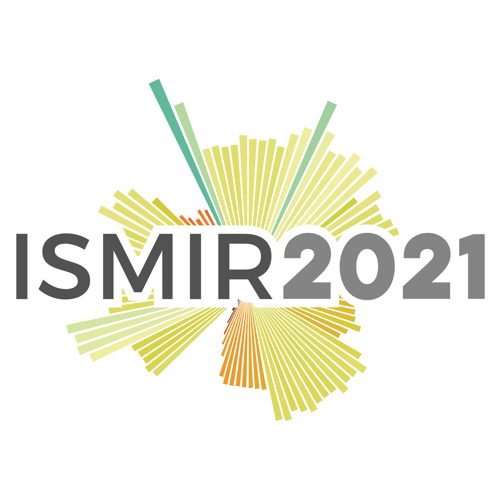
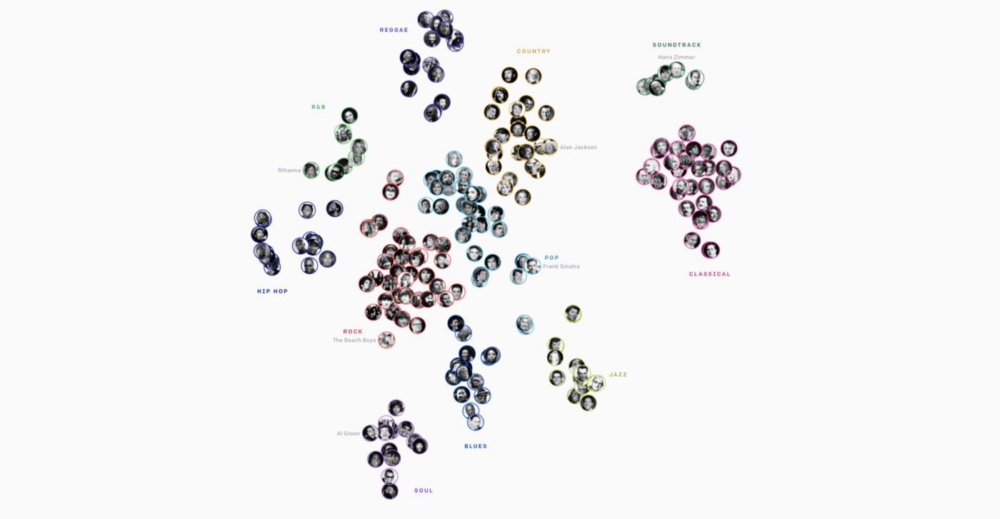
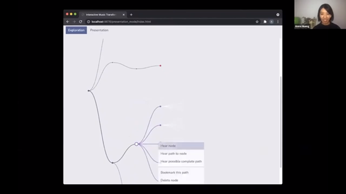

Postdoctoral Fellow · NTT Kyoto

I have been a volunteer at ISMIR 2021, my first ever conference (online edition). These are the things I liked the most and a review of the presentations I attended.
The first session was an introduction with well-known MIR researchers such as Meinard Müller, Masataka Goto, Emilia Gómez, and Geoffrey Peeters. Newcomers asked questions like whether it was mandatory to read a paper before attending a poster session — the common answer was "no". The poster session is there for any kind of question. What I loved about the researchers' answers was that they all seemed very open to meeting newcomers in the field.
I remember Meinard Müller saying that in his first conference he met Masataka Goto — one of his "heroes" — and he expected Masataka to arrive by helicopter as in a film, but it was very different. He greeted and met him and they had a very interesting conversation. Newcomers should not be shy when meeting well-known researchers at conferences because they are usually open and happy to talk.
The poster sessions were the perfect place to ask questions to the authors. The papers I was most interested in were:
MuseNet & Jukebox, Human and AI Composition — Christine McLeavey (OpenAI).
Not only did McLeavey show examples of the models developed by the OpenAI team but she also pointed out new directions in music composition — such as the power of AI in creating new music genres. She showed how Jukebox's embeddings could represent composers, genres, and styles, and how many "white spaces" existed between existing music genres, spaces that might be filled by new genres created by AI.

Music AI — Perspectives on authorship with creative artificial intelligence in music — KTH Royal Institute of Technology.
A very interesting discussion about ownership of music composed with AI. Who is the author of music composed by a neural network? The person who builds the model? The people who made the dataset? Are neural networks capable of extrapolating or do they just interpolate between training samples? And how do we measure creativity or similarity between music pieces?
Tuning Music Transformer — Anna Huang.
Very inspiring. Huang presented a smart tree UI interface where the model generates a short sequence in a starting node, then opens branches with different musical continuations. The user can select the branch they prefer and the model generates new continuations from there. See an example here (at 23:10).

As a volunteer of the general chairs I did not have many duties, but hanging around the virtual room was an amazing experience even though the conference was virtual. I could learn more about the MIR field and see where new research directions are pointing. I highly recommend volunteering — it is the perfect way to meet people in the field and make first contact with the conference world.